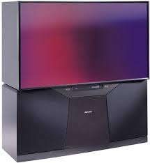
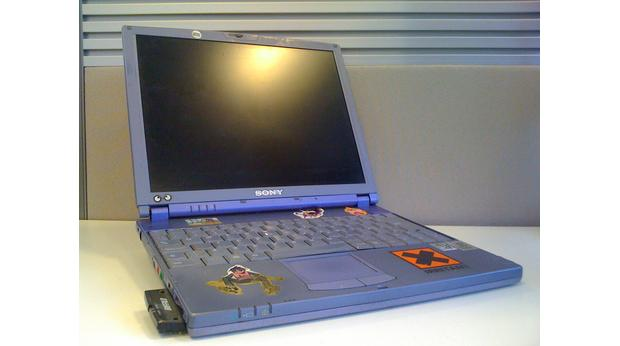
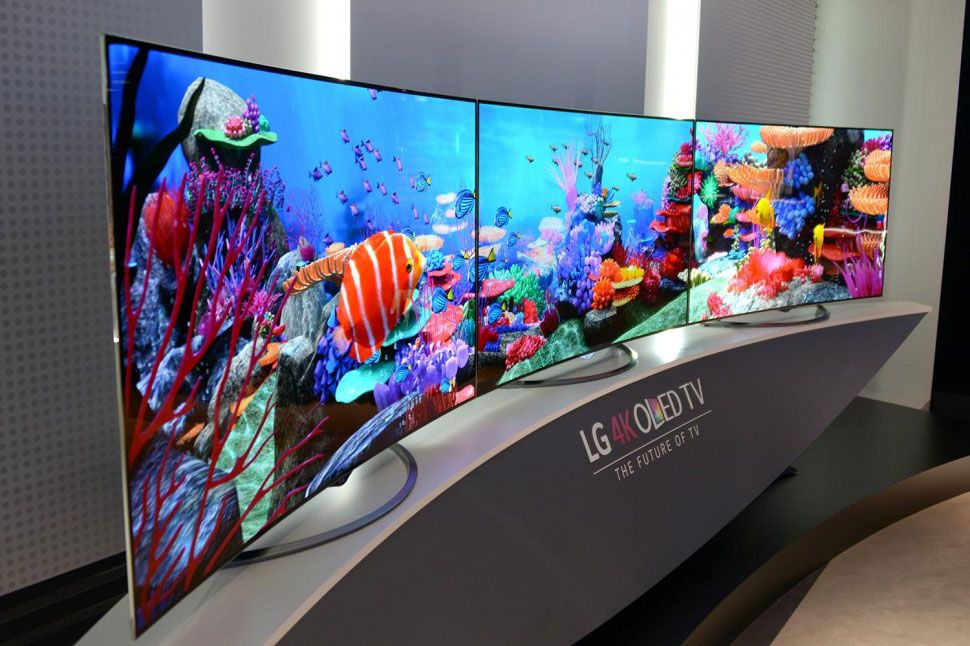

(CRT)

(RPTV)
(FPD)
(LED)

(OLED)
| Display technology | ||
|---|---|---|
| DISPLAY TYPE | DETAILS | PICTURE |
| Cathode-Ray Tube (CRT) |
The main type of display technology us between 1950-2000 that use vacuum tubes and a phosphorescent screen to display images. | |
| Rear Projection (RPTV) |
RPTV became widely popular after the 2000's with the market moving toward bigger display and it's relatively small foot print. |  |
| Flat-Panel Display (FPD) |
The first type of display to use Liquid Crystal Display LCD. The ultra thin display of LCD help popularize the modern Laptop we use today. |  |
| Light-Emitting Diode (LED) |
Currently we are still using LED as it's cheaper to mass produce over OLED. LED has a higher energy efficiency over previous type of display's. The MacBook thats in front of us uses this display technology. | |
| Organic-Light-Emitting Diode (OLED) |
Most modern phone of today use OLED since its thinner and more energy efficient that LED. Most people don't use OLED outside of there smart phone due to it's high price but thats slowly changing. One of the hugh selling point of OLED is its ability to fold or curve. |  |